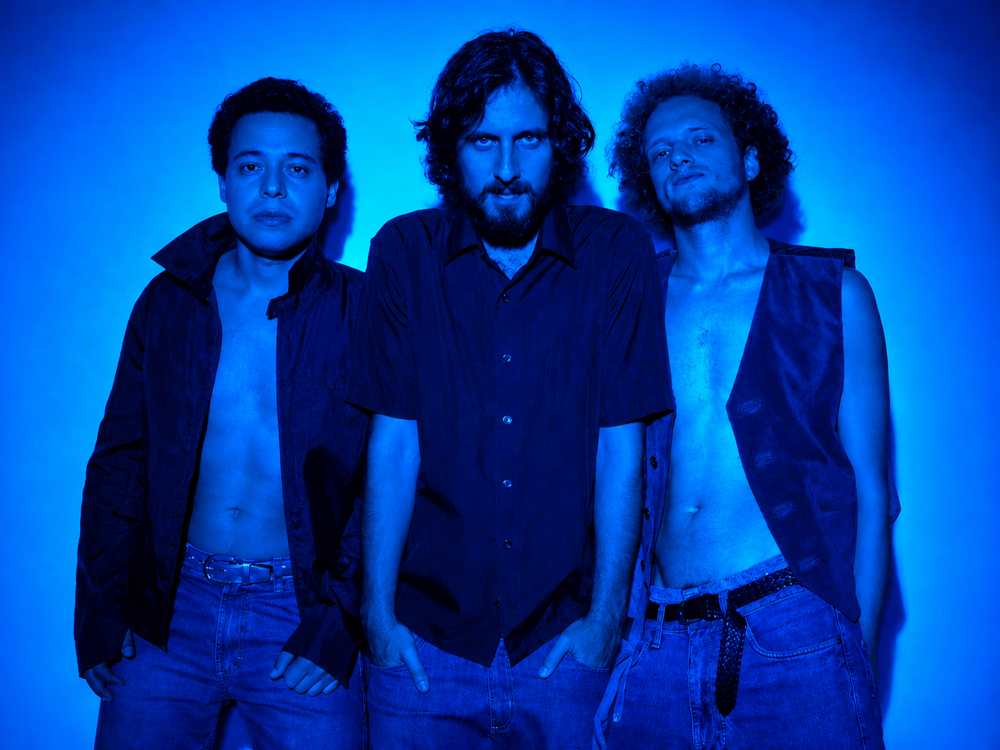
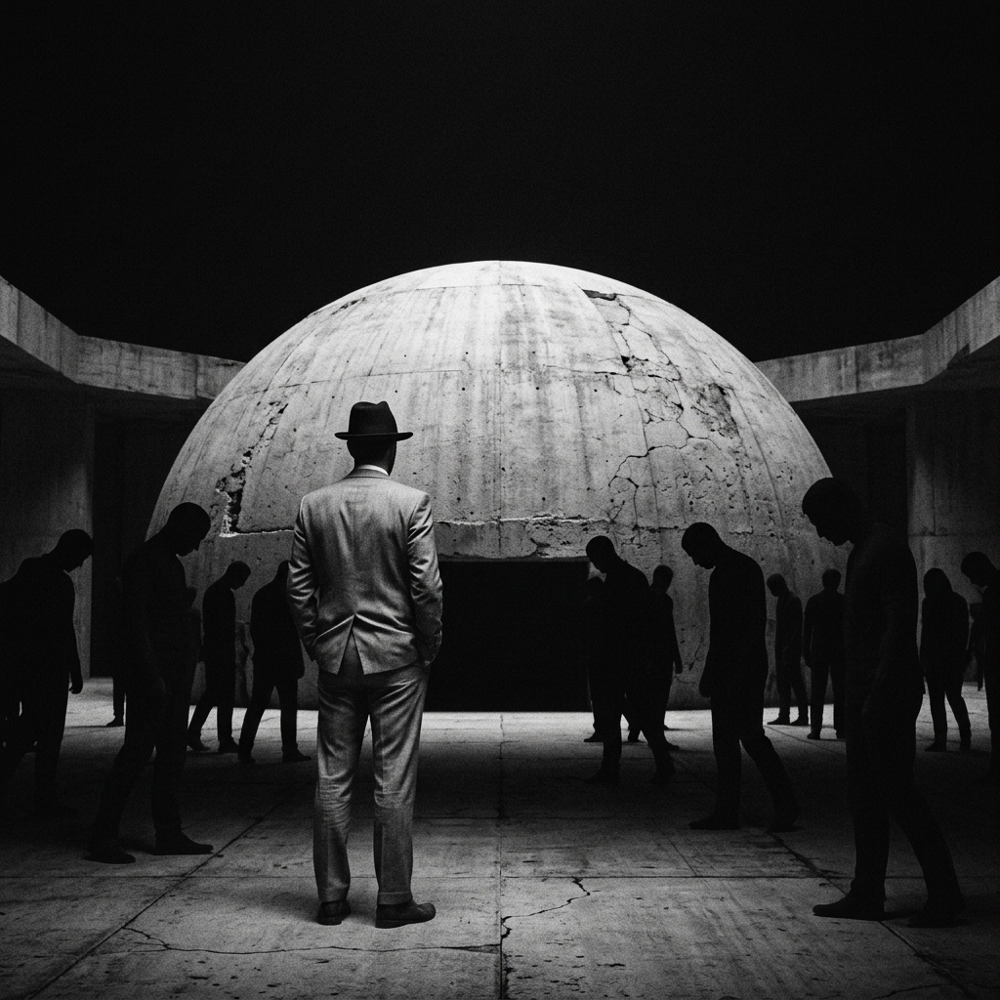

Três singles. Um personagem.
E ele faz a própria campanha.
Três músicas formam um arco: um político é acusado, se defende com orgulho e termina virando produto de prateleira.
Esse político existe. Chama-se O Articulista, e é ele quem conduz o lançamento — como se fosse a candidatura dele.
A campanha dele termina na própria humilhação, no terceiro single.
Ele é acusado de longe. Ataca a classe política inteira: hipocrisia, demagogia, a festa da democracia.
Ele toma a palavra em primeira pessoa e se gaba da própria impunidade. O nome da banda aparece dentro da letra, na voz dele.
Ele vira produto, rebaixado a mercadoria de prateleira. Crítica de consumo e publicidade: a menos datada das três.
Buscamos veiculação em portais de música, curadores de playlist e podcasts de rock independente brasileiro.
Preferimos dizer isso agora a descobrir depois de três reuniões.
Single 1. Entregue à distribuidora, data marcada.
Single 2, na semana anterior ao 1º turno.
Single 3, durante o 2º turno.
As três reunidas, com o arco fechado.
A data do segundo single é deliberada: uma música cujo refrão acusa o país de engolir calado, lançada no momento em que o país vota.
Um single lançado na semana anterior ao primeiro turno, com um refrão que acusa o país de engolir calado.
Uma banda paulistana da cena independente dos anos 2000 que reaparece — e apresenta o personagem antes de apresentar a música.
Um lançamento conduzido por um político ficcional que faz campanha para si mesmo: a máquina de comunicação política satirizando a si própria.
Satírica sem ser partidária, em ano eleitoral: um alvo que não é um lado.
Imagem gerada por IA usada como recurso estético declarado, com rosto nunca humano — e rotulada em todas as peças.

A banda esteve ativa durante os anos 2000 e retoma os trabalhos agora, depois de muitos anos. Não há interesse em contar a história passada da banda nesse momento. O foco é no lançamento atual.
A aposta desta fase é digital, e o projeto foi desenhado para funcionar assim.
Ele publica pronunciamentos em vídeo, agradece apoios que ninguém deu, divulga números que ninguém consegue verificar e trata os três singles como tratativas em andamento.
Nunca usa as palavras banda, música ou lançamento. Nunca sai do personagem.
A banda nunca o endossa e nunca responde a ele.
Preto e branco, alto contraste, espaço negativo. O homem de paletó ocupa o lugar dos edifícios do Congresso Nacional — as duas cúpulas funcionam como moldura. O símbolo é o mesmo personagem das músicas, em silêncio. O Articulista é o que acontece quando ele abre a boca.
Paletó em Brasília, banda de rock independente de São Paulo, volta com três singles conduzidos por um personagem: O Articulista, um político ficcional que trata o lançamento como se fosse a própria candidatura. A trilogia começa em 11 de setembro com Do meio ao fim, passa por E o Brasil não diz nada na semana anterior ao primeiro turno e termina com Garoto Propaganda, quando o personagem é rebaixado a mercadoria de prateleira. A sátira não tem partido: o alvo é a classe política inteira.
